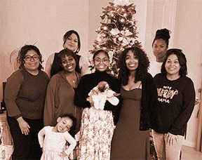
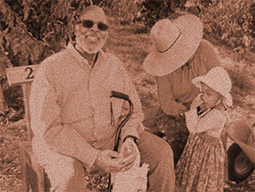
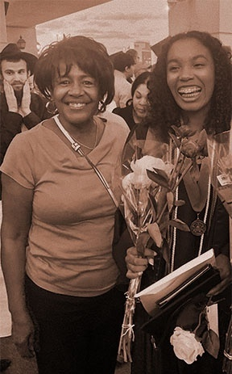
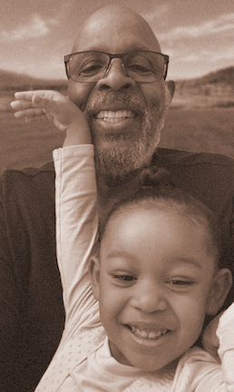

I was raised by more than my parents. I was raised by my grandmothers. They gave me consistency, patience, and a place where I felt safe to just be. Through everyday moments—meals, stories, walks, and shared time—they shaped who I am today. Now, as an adult, I still show up for them the way they showed up for me. Not every child has access to that kind of steady presence. Not every older adult has someone to pour into. I thought it would be cool to make a false nonprofit called "The Patchwork Village" and make a porfolio of work surrounding this concept. The idea is to pair foster children with older adults that will teach them about life and their hobbies. All of my research for this project can be found here.Email me for any questions!


